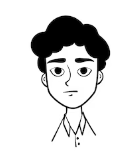

| Historia de "Gatitos de Menta" | Personitas detras del proyecto |
| Gatitos de Menta comenzo hace casi un año. El primero de junio nos mudabamos a nuestra primer casita donde nos encontramos con nuestros primeros michitos, entre miedos y no saber que hacer con ellos decidimos cuidarlos. Fue dificil al comienzo ya que tenian un pasado dificil y no lograbamos que confien en nosotros, pero de a poco con mucho amor pero por sobretodo PASIENCIA. Transitar michitos viejos es una tarea dificil ya que todos cuentan con sus historias personales y muchas veces tuvieron una vida dura con maltratos y pasando hambre. De a poco fueron sumandose mas, entre comida que dejabamos en el patio para los callejeritos y los que se metian a la casa a curosear. Tuvimos perdidas y a pesar de que aun duele un poco eso nos da mas fuerza para poder seguir recuperando y dando adopcion a muchos para que no pasen por lo mismo. Nuestro objetivo es promover la adopcion y esterilizacion de toda mascota, tenemos que ser concientes a la hora de adoptar y tomarnos la gran responsabilidad que conlleva. Si queres colaborar con ellos hay muchas formas, tenerlos en transito hasta que consigan hogar, adoptarlos o tambien monetariamente ya que tenemos que pagar veterinarios para mantenerlos sanitos, castraciones y alimento para todos los michitos. En nuestra seccion "Contacto" podes dejarnos tu comentario o por whatsapp pueden contactarse para resolver todas sus dudas. Desde ya muchas gracias por interesarte en nuestro Gatitos de Menta. |

Joaquin.
|